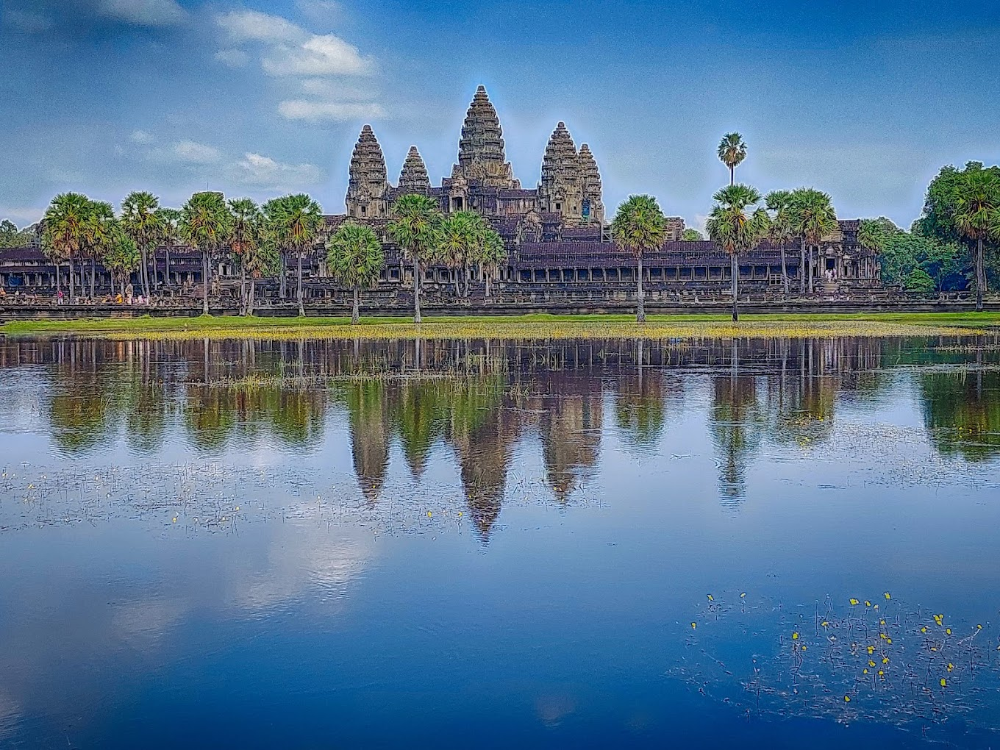
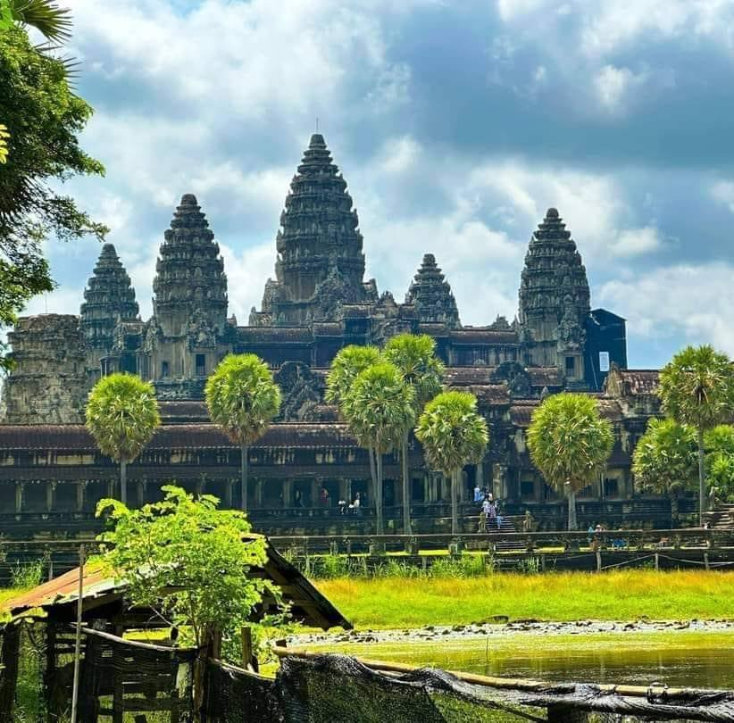

ប្រាសាទ អង្គរវត្ត ឬ នគរវត្ត (អង់គ្លេស: Angkor Wat) or (Nokor Wat)
<រចនាសម្ព័ននៃសំណង់ប្រាសាទត្រូវ>ជាប្រាសាទ ដែលធំបំផុត នៅក្នុងប្រទេសកម្ពុជា ដែលមានមាឌដ្ឋានលើ
ផ្ទៃដីទំហំ ១៦២,៦ ហិចតា ដោយស្មើនឹង (1,626,000 m2)
រចនាសម្ព័ននៃសំណង់ប្រាសាទត្រូវ បានចាត់ទុកជាស្ថាបត្យកម្មដ៏កំពូល នៃ អច្ឆរិយៈវត្ថុរបស់ពិភពលោក ដែលត្រូវបានសាងសង់ឡើងក្នុងស.វទី១២ ដោយព្រះបាទ សូរ្យវរ្ម័នទី២ ដែលជាព្រះមហាក្សត្រ នាសម័យកាល ចក្រភពខ្មែរ ប្រាសាទនេះសាងសង់ ដើម្បីឧទ្ទិសឱ្យ ព្រហ្មញ្ញសាសនា នៃលទ្ធិជំនឿលើ ព្រះវិស្ណុ ដូចនេះហើយ ប្រាសាទអង្គរវត្តត្រូវបានគេសន្មតថា ជាប្រាសាទសាសនា ដែលធំបំផុតនៅលើពិភពលោក ដែលជាប់ក្នុងកំណត់ត្រាពិភពលោក "ហ្គីនណេស" (Guinness World Records) ក្នុងអំឡុងឆ្នាំ ១៩៨៥ ។
[១] [២]
ប្រវត្តិប្រាសាទ
Temple History

ប្រាសាទអង្គរវត្ត ត្រូវបានកសាងឡើងក្នុងឆ្នាំ ១១២២ នៃគ.សករាជ ដែលត្រូវនិង ស.វទី១២ ក្នុងរជ្ជកាលព្រះបាទ សូរ្យវរ្ម័នទី២ ដែលប្រាសាទនេះបានសាងសង់ឡើងក្នុងពហុបំណងច្រើនយ៉ាងរបស់ព្រះអង្គ ដោយការឧទ្ទិសឱ្យអង្គទេព ព្រះវិស្ណុ ការរំលឹកដល់ស្នាដៃរបស់អង្គខ្លួនឯងផ្ទាល់ផង ការផ្ដល់ជាទីឋានបរមសុខ នៅពេលដែលទ្រង់សោយទីវង្គត់នៅពេលខាងមុខផងដែរ ។[៣] ប្រាសាទអង្គរវត្ត ត្រូវបានបោះបង់ចោលដោយសង្គ្រាមឈ្លានពាន របស់កងទ័ពសៀម ក្នុងអំឡុងស.វទី១៤ ដោយព្រះបាទ បរមរាជាទី១ នៃអង្គ ពញ្ញាយ៉ាត ដែលប្រកាសចាកចោលរាជធានីអង្គរ ក្នុងឆ្នាំ ១៣៨៨ នៃគ.សករាជ នេះបើយោងតាមពង្សាវតារ នៃកំណត់ត្រាប្រវត្តិសាស្ត្ររបស់កម្ពុជា ក្នុងសៀវភៅឯកសារ មហាបុរសខ្មែរ ក្នុងឆ្នាំ ១៩២៩ ដែលត្រូវបានយកមកប្រែសម្រួលដោយលោក អេងស៊ុត ក្នុងឆ្នាំ ១៩៦៩ ។[៤] [៥] ប្រាសាទអង្គរវត្ត បានបន្តការបោះបង់ចោលរហូតដល់រាជព្រះបាទ ចន្ទរាជា ដែលបានលើកកងទ័ពលង្វែក ទៅកំចាត់សៀម នៅតំបន់អង្គរ ក្នុងឆ្នាំ ១៥៤០ នៃគ.សករាជ ក្រោយមកទើបព្រះអង្គបានជួសជុលប្រាសាទអង្គរវត្ត ត្រង់រោងថែវចម្លាក់ផ្នែកខាងកើតឈៀងខាងជើង និង រោងថែវមួយផ្ទាំងទៀតនៅខាងជើង ចំណែកឯផ្នែកខាងលើនៃតួប៉មកណ្ដាលមានតឹកតាង នៃការលម្អដោយរូបព្រះពុទ្ធរូប៤អង្គ ឈរបែរខ្នងទល់គ្នាទៅរកទិសធំទាំងបួន កើត-លិច-ជើង-ត្បូង ដែលត្រូវបានតម្កល់ដើម្បីបិទផ្ជិតចំហរបស់តួប៉មកណ្ដាលនៃគូបរៈ ដែលរូបចម្លាក់បង្ហាញពីការឆ្លាក់ក្នុងទម្រង់ខុសគ្នា នៃទឹកដៃរបស់ជាងចម្លាក់ផងដែរ ។[៦]
អង្គរវត្ត នៃកំណត់ត្រាអុឺរ៉ុប
Angkor Wat of European Record
ជនជាតិអុឺរ៉ុបដំបូងបង្អស់ដែលបានរកឃើញ ប្រាសាទអង្គរវត្ត ក្នុងឆ្នាំ ១៥៨៦ នៃគ.សករាជ លោកមានឈ្មោះថា "អានតូនីញូ ដា មាដេឡេណា" (Antonio da Magdalena) លោកគឺជាបុព្វជិត សាសនកាតុលិក (Catholic Religion) ដែលជាជនជាតិ "ប៉ុទុយហ្គេស" (Portuguese) ដែលបានធ្វើកំណត់ត្រានៃការរកឃើញប្រាសាទអង្គរវត្ត ជាមួយនិងការពណ៌នាអំពីដំណើររបស់លោកចូលមកក្នុងព្រៃដ៏ជ្រៅ និងបានប្រទះឃើញនូវប្រាសាទក្នុងព្រៃជាច្រើន ជាមួយនិងកំពូលប្រាំនៃប្រាសាទដែលមានរចនាបថ ដូចទៅនិងផ្កាឈូក ដែលត្រូវបានបំផុសគំនិតឱ្យពួកគេធ្វើកំណត់ត្រាពីប្រាសាទដ៏អស្ចារ្យនេះ ។ រយៈពេល ៣ឆ្នាំ បន្ទាប់ ពោលគឺនៅឆ្នាំ ១៥៨៩ នៃគ.សករាជ មានប្រវត្តិវិទូជនជាតិ ប៉ុទុយហ្គេស មួយរូបទៀតមានឈ្មោះថា "ឌៀអាហ្គូ ដូគោតូ" (Diago do Couto) ដែលបានរកឃើញប្រាសាទក្នុងតំបន់អង្គរ ជាមួយនិងការពិពណ៌នារបស់លោក អំពីលក្ខណៈដែលលោកបានមើលឃើញ នៅសំណង់ប្រាសាទ ដែលមើលទៅដូចជ្រុងនៃទីក្រុងមួយក្នុងទម្រង់ដូចរាជវាំង ដែលមានគូទឹកព័ទ្ធជុំវិញ និង មានស្ពានឆ្លងកាត់ចំនួន ៥ច្រកទ្វារ ជាមួយនិងរូបចម្លាក់ដែលមានសណ្ឋានដូចកាន់ខ្សែរពួរ និង មានត្រចៀកវែងៗ ផងដែរ ដែលនេះប្រហែលជាទីក្រុង អង្គរធំ ។[៧] [៨]
អង្គរវត្ត នៃកំណត់ត្រា ស.វទី១៧
Angkor Wat of the 17th Century Record
ការមកដល់របស់ ជនជាតិជប៉ុន (Japanese) នាស.វទី១៧ ក្នុងរាជព្រះបាទ បរមរាជសម្ភារ តាមរយៈឈ្មួញសំពៅ ដោយលោក "ខេនរីអុ សុីម៉ាណុ" (Kenryo Shimano) ដែលមកពី "ណាកាសាគុី" (Nagasaki) ដែលបានរកឃើញប្រាសាទអង្គរវត្ត ក្នុងឆ្នាំ ១៦៣២ នៃគ.សករាជ លោកបានគូរនូវ គំនូរព្រាង របស់ប្រាសាទអង្គរវត្ត ជាមួយនិង ការគូរនូវរូបសំណង់ប្រាសាទ ដែលមានបរិវេណដ៏ធំ និង គំនូរដែលមានសំណង់ប្រាសាទដ៏ច្រើន តាមរយៈនៃការរកឃើញប្រាសាទអង្គរវត្តនេះ ដែលមានដំណើរសុីចង្វាក់គ្នាទៅនិង កំណត់ត្រា ពងស្សាវតារនៃប្រវត្តិសាស្ត្ររបស់កម្ពុជា ដែលកត់ត្រា អំពីព្រះបរមរាជសម្ភារ ដែលទៅបួសជាភិក្ខុសង្ឃនៅនគរវត្ត ក្នុងព្រះនាមនៃអង្គ ពញ្ញាតូ ក្នុងឆ្នាំ ១៦៣០ នៃគ.សករាជ ដែលបានកត់ត្រាក្នុងឯកសារមហាបុរសខ្មែរ ក្នុងឆ្នាំ ១៩២៩ ដែលអាចបញ្ចាក់បានយ៉ាងច្បាស់ថា លោក ខេនរីអុ សុីម៉ាណុ ទំនងជាអ្នកផ្សព្វផ្សាយសាសនាព្រះពុទ្ធម្នាក់ផងដែរ ។[៩]
អង្គរវត្ត នៃកំណត់ត្រា បារាំង
Angkor Wat of the French Record
ការរកឃើញ ប្រាសាទអង្គរវត្ត របស់លោក "ឆាលី អុីមម៉ូញែល បួលវ៉ក" (Charles-Emile Bouillevaux) ដែលជាបេសកជន នៃអ្នកផ្សព្វផ្សាយសាសនា និង ជាអ្នករុករកជនជាតិបារាំង ដែលបានមកទស្សនាអង្គរក្នុង ខែធ្នូ ឆ្នាំ១៨៥០ ហើយលោក បានបោះពុម្ពផ្សាយដំណើររឿងនៃការរុករករបស់លោកនៅក្នុងប្រទេសកម្ពុជាក្នុងឆ្នាំ ១៨៥៨ មុនពេលពីរឆ្នាំនៃការមកដល់របស់លោក "ហេនរីមូហត" (Henri Mouhot) ក្នុងឆ្នាំ ១៨៦០ នៃគ.សករាជ ។ លោក ឆាលី អុីមម៉ូញែល បានមកដល់ "កូសាំងស៊ីន" (Cochinchina) នៅឆ្នាំ១៨៤៩ ហើយគាត់បានបន្តដំណើរនៃការរុករករបស់គាត់ និងបានឃើញអង្គរវត្ត ក្នុង ឆ្នាំ១៨៥០ ហើយពីរបីខែក្រោយមកលោកបានស្នាក់នៅជាមួយប្រជាជនព្នង នៅភាគឦសាននៃប្រទេសកម្ពុជា ហើយធ្វើដំណើរពីសំបូរទៅ ហាទៀង (Ha-Tien) ក្នុងរយៈពេលប្រាំបួនថ្ងៃ បន្ទាប់មកស្នាក់នៅ ប្រទេសឡាវ ក្នុងឆ្នាំ១៨៥៣ ទើបត្រឡប់មកកម្ពុជាវិញនៅឆ្នាំ ១៨៥៥ ដែលបានមក ខេត្តបាត់ដំបង បន្ទាប់មកលោកបានត្រឡប់ទៅ អុឺរ៉ុបវិញ ដោយបម្រើការជាអាចារ្យនៃ "ស៊ូហ្គន" (Choquan) ពីឆ្នាំ ១៨៦៧ ដល់ឆ្នាំ ១៨៧៣ ក្រោយមកទើបឆ្នាំ ១៨៧៨ ទើបលោកបោះពុម្ភផ្សាយនូវដំណើររុករករបស់លោកនៅកម្ពុជា ទោះជាយ៉ាងណា ការចេញផ្សាយរបស់លោក គឺនៅពេលក្រោយ នៃការចេញផ្សាយរបស់លោក ហេនរីម៉ូហត ដែលបានចេញផ្សាយនូវ ទិនានុប្បវត្តិ និង គំនូររបស់គាត់ទាក់ទងនិងប្រាសាទអង្គរវត្តផងដែរ ។[។